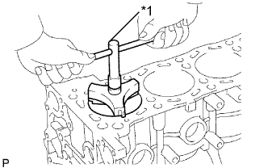
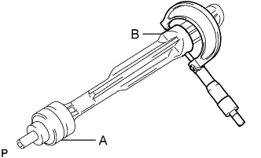

БЛОК ЦИЛИНДРОВ > ПРОВЕРКА |
| 1. ПРОВЕРЬТЕ КОРОБЛЕНИЕ БЛОКА ЦИЛИНДРОВ |
С помощью прецизионной поверочной линейки и комплекта плоских щупов измерьте коробление поверхности, соприкасающейся с прокладкой головки блока цилиндров.
Проверьте, нет ли на цилиндре вертикальных царапин.
При наличии глубоких царапин расточите все 4 цилиндра. При необходимости замените блок цилиндров.
| 2. ПРОВЕРЬТЕ ОТВЕРСТИЕ ПОД ЦИЛИНДР |
 |
С помощью нутромера измерьте диаметр отверстия под цилиндр в точке А в осевом и радиальном направлениях.
| *1 | Направление тяги |
| *2 | Осевое направление |
 | Передняя сторона |
|  |
Проверьте уступ цилиндра.
| *1 | Инструмент для снятия уступа |
| 3. ПРОВЕРЬТЕ ДИАМЕТР ПОРШНЯ |
 |
Измерьте микрометром диаметр поршня в плоскости, перпендикулярной осевой линии поршня, на заданном расстоянии от его конца.
| *1 | Расстояние |
| 4. ПРОВЕРЬТЕ МАСЛЯНЫЙ ЗАЗОР ПОРШНЯ |
Измерьте диаметр отверстия под цилиндр в направлении тяги.
Отнимите от измеренного диаметра цилиндра измеренный диаметр поршня.
| 5. ПРОВЕРЬТЕ ЗАЗОР КАНАВКИ КОЛЬЦА |
С помощью комплекта плоских щупов измерьте зазор между новым поршневым кольцом и стенкой канавки кольца.
| Параметр / Устройство | Заданные условия |
| Компрессионное кольцо № 1 | 0,020 - 0,075 мм (0,000787 - 0,00295 дюйма) |
| Компрессионное кольцо № 2 | 0,020 - 0,065 мм (0,000787 - 0,00256 дюйма) |
| Маслосъемное кольцо | 0,020-0,070 мм (0,000787-0,00276 дюйма) |
| 6. ПРОВЕРЬТЕ ЗАЗОР РАЗРЕЗА ПОРШНЕВОГО КОЛЬЦА |
Вставьте поршневое кольцо в цилиндр.
С помощью поршня протолкните поршневое кольцо так, чтобы оно слегка выступало за нижний предел хода кольца, на расстояние 110 мм (4,33 дюйма) от верхней части блока цилиндров.
С помощью комплекта плоских щупов измерьте зазор разреза.
| Параметр / Устройство | Заданные условия |
| Компрессионное кольцо № 1 | 0,26 - 0,38 мм (0,0102 - 0,0150 дюйма) |
| Компрессионное кольцо № 2 | 0,59 - 0,71 мм (0,0232 - 0,0280 дюйма) |
| Маслосъемное кольцо | 0,10 - 0,40 мм (0,00394 - 0,0157 дюйма) |
| Параметр / Устройство | Заданные условия |
| Компрессионное кольцо № 1 | 0,90 мм (0,0354 дюйма) |
| Компрессионное кольцо № 2 | 1,36 мм (0,0535 дюйма) |
| Маслосъемное кольцо | 0,75 мм (0,0295 дюйма) |
| 7. ПРОВЕРЬТЕ МАСЛЯНЫЙ ЗАЗОР ПОРШНЕВОГО ПАЛЬЦА |
 |
С помощью индикатора часового типа для отверстий измерьте внутренний диаметр отверстия под поршневой палец.
Микрометром измерьте диаметр поршневого пальца.
| Точка измерения | Положение поршневого пальца |
| a | 31 мм (1,22 дюйма) |
| b | 6 мм (0,24 дюйма) |
Вычтите из измеренного диаметра отверстия под поршневой палец измеренный диаметр поршневого пальца.
С помощью индикатора часового типа для отверстий измерьте внутренний диаметр втулки шатуна.
Вычтите из измеренного диаметра поршневого пальца измеренный внутренний диаметр втулки.
| *1 | Метка внутреннего диаметра отверстия для поршневого пальца |
| *2 | Метка внутреннего диаметра втулки шатуна |
| *3 | Метка внешней стороны |
| 8. ПРОВЕРЬТЕ ШАТУН В СБОРЕ |
Проверьте центровку шатуна с помощью устройства для проверки кривизны шатуна и комплекта плоских щупов.
 |
Проверьте наличие изгибов.
Убедитесь в отсутствии скручивания.
| 9. ПРОВЕРЬТЕ КОЛЕНЧАТЫЙ ВАЛ |
Проверьте радиальное биение.
Установите коленчатый вал на V-образные призмы.
Индикатором часового типа измерьте радиальное биение на центральной шейке.
Проверьте коренные шейки.
Микрометром измерьте диаметр каждой коренной шейки.
| Параметр / Устройство | Заданные условия |
| Шейка № 3 | 59,981 - 59,994 мм (2,361 - 2,362 дюйма) |
| Кроме шейки № 3 | 59,987 - 60,000 мм (2,3617 - 2,3622 дюйма) |
Для каждой коренной шейки проверьте конусность и овальность, как показано на рисунке.
Проверьте штифт коленчатого вала.
Микрометром измерьте диаметр каждого штифта коленчатого вала.
Для каждого штифта коленчатого вала проверьте конусность и овальность, как показано на рисунке.
| 10. ПРОВЕРЬТЕ МАСЛЯНЫЙ ЗАЗОР КОЛЕНЧАТОГО ВАЛА |
Очистите все коренные шейки и подшипники коленчатого вала.
Проверьте, нет ли на шейках и подшипниках царапин и следов коррозии.
При наличии повреждений на шейке или подшипнике замените подшипник.
Установите подшипники и упорные шайбы коленчатого вала.
Установите коленчатый вал в блок цилиндров.
На каждую шейку положите сминаемый пластичный калибр (Plastigage).
| *1 | Сминаемый пластичный калибр Plastigage |
Установите 5 крышек подшипников коленчатого вала и закрепите их 10 болтами (Нажмите здесь).
Выверните 10 болтов и снимите 5 крышек подшипников коленчатого вала (Нажмите здесь).
Измерьте сминаемый пластичный калибр в наиболее широком месте.
| Параметр / Устройство | Заданные условия |
| Для шейки №3 | 0,036 - 0,067 мм (0,00142 - 0,00264 дюйма) |
| Для остальных шеек | 0,030 - 0,061 мм (0,00118 - 0,00240 дюйма) |
| *1 | Сминаемый пластичный калибр Plastigage |
| *2 | Для шейки № 1 |
| *3 | Шейка № 2 |
| *4 | Шейка № 3 |
| *5 | Шейка № 4 |
| *6 | Шейка № 5 |
| *7 | Метка 1, 2 или 3 |
| Параметр / Устройство | Заданные условия |
| Метка 1 | 64,004 - 64,010 мм (2,51984 - 2,52007 дюйма) |
| Метка 2 | 64,011 - 64,016 мм (2,52011 - 2,52031 дюйма) |
| Метка 3 | 64,017 - 64,022 мм (2,52035 - 2,52055 дюйма) |
| Параметр / Устройство | Заданные условия |
| Метка 1 | 1,987 - 1,990 мм (0,07823 - 0,07835 дюйма) |
| Метка 2 | 1,991 - 1,993 мм (0,07839 - 0,07846 дюйма) |
| Метка 3 | 1,994 - 1,996 мм (0,07850 - 0,07858 дюйма) |
Полностью удалите сминаемый пластичный калибр (Plastigage).
Выполните описанную выше проверку для каждой шейки.
| 11. ПРОВЕРЬТЕ УРАВНОВЕШИВАЮЩИЙ ВАЛ № 1 |
Проверьте диаметр шейки.
 |
С помощью микрометра измерьте диаметр коренных шеек уравновешивающего вала.
| Параметр / Устройство | Заданные условия |
| А | 37,969 - 37,985 мм (1,49 - 1,50 дюйма) |
| B | 37,449 - 37,465 мм (1,474 - 1,475 дюйма) |
Проверьте диаметр подшипника.
С помощью нутромера измерьте внутренний диаметр подшипника уравновешивающего вала.
| Параметр / Устройство | Заданные условия |
| А | 38,025 - 38,045 мм (1,497 - 1,498 дюйма) |
| B | 37,525 - 37,545 мм (1,477 - 1,478 дюйма) |
Проверьте масляный зазор.
Вычтите измеренный диаметр коренной шейки уравновешивающего вала из измеренного внутреннего диаметра подшипника уравновешивающего вала.
| Параметр / Устройство | Заданные условия |
| А | 0,040 - 0,076 мм (0,00157 - 0,00299 дюйма) |
| B | 0,060 - 0,096 мм (0,00236 - 0,00378 дюйма) |
| 12. ПРОВЕРЬТЕ УРАВНОВЕШИВАЮЩИЙ ВАЛ № 2 |
Проверьте диаметр шейки.
|  |
С помощью микрометра измерьте диаметр коренных шеек уравновешивающего вала.
| Параметр / Устройство | Заданные условия |
| А | 37,969 - 37,985 мм (1,49 - 1,50 дюйма) |
| B | 37,449 - 37,465 мм (1,474 - 1,475 дюйма) |
Проверьте диаметр подшипника.
С помощью нутромера измерьте внутренний диаметр подшипника уравновешивающего вала.
| Параметр / Устройство | Заданные условия |
| А | 38,025 - 38,045 мм (1,497 - 1,498 дюйма) |
| B | 37,525 - 37,545 мм (1,477 - 1,478 дюйма) |
Проверьте масляный зазор.
Вычтите измеренный диаметр коренной шейки уравновешивающего вала из измеренного внутреннего диаметра подшипника уравновешивающего вала.
| Параметр / Устройство | Заданные условия |
| А | 0,040 - 0,076 мм (0,00157 - 0,00299 дюйма) |
| B | 0,060 - 0,096 мм (0,00236 - 0,00378 дюйма) |
| 13. ПРОВЕРЬТЕ МАСЛЯНУЮ ФОРСУНКУ № 1 В СБОРЕ |
Введите в обратный клапан штифт, чтобы проверить, не залип ли он.
| Нажат |
Нажмите на обратный клапан штифтом и убедитесь, что он перемещается плавно.
Если обратный клапан двигается не плавно, очистите или замените масляную форсунку № 1.
Подайте воздух в патрубок A. Убедитесь в отсутствии утечки воздуха через патрубок B.
| Воздух |
Нажмите на обратный клапан, одновременно подавая воздух в патрубок А. Убедитесь, что воздух проходит через патрубок В.
| Воздух |
 | Нажат |
| 14. ПРОВЕРЬТЕ УСТАНОВОЧНЫЙ БОЛТ КРЫШКИ ПОДШИПНИКА КОЛЕНЧАТОГО ВАЛА |
С помощью штангенциркуля измерьте диаметр самого удлиненного резьбового элемента в зоне измерения.
| *1 | Расстояние |
| *2 | Диапазон измерений |
| 15. ПРОВЕРЬТЕ БОЛТ ШАТУНА |
С помощью штангенциркуля измерьте диаметр напряженной части болта.
| *1 | Часть, испытывающая напряжение |